Regression comparison
Download resultsAggregation weights
\widehat y(x)=y_{\rm mean}+y_{\rm std}\sum_{h=1}^{H}\beta_h\mu_h(x)Coefficients can be negative and need not sum to one. Intervals describe coefficient uncertainty; the dashed reference is DE’s fixed 1/H weight.
BDKN

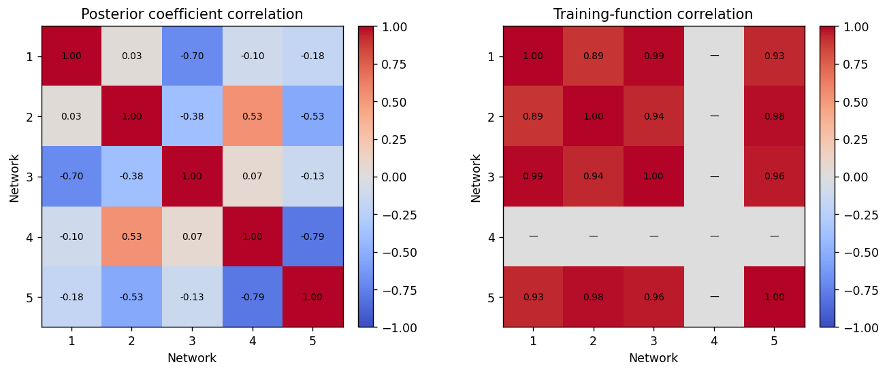


Each density panel uses its own X range for readability; coefficient intervals above share a common axis. Prior reference conditions on fitted noise. Contribution shares use held-out inputs; test targets are used only for scoring.
| Network | β mean | 95% low | 95% high | P(β > 0) | Contribution share | Test RMSE | Test NLL |
|---|---|---|---|---|---|---|---|
| 1 | 0.43469 | -0.77729 | 1.64666 | 0.76846 | 0.16844 | 5.02000 | 1231149.62174 |
| 2 | 0.99304 | 0.21113 | 1.77496 | 0.99230 | 0.36008 | 4.77033 | 656706.74738 |
| 3 | 0.46964 | -0.86109 | 1.80038 | 0.76492 | 0.16942 | 4.81931 | 290912.11794 |
| 4 | -0.36685 | -1.10042 | 0.36672 | 0.15466 | 0.06824 | 3.27546 | 19.29033 |
| 5 | -0.61485 | -2.01420 | 0.78449 | 0.18515 | 0.23383 | 5.00970 | 18.78189 |
Functional repulsion · BDKN
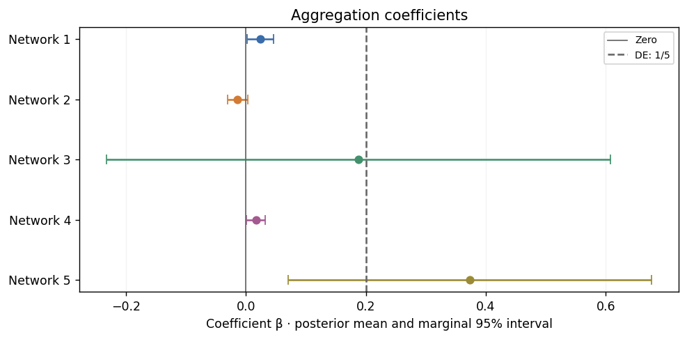
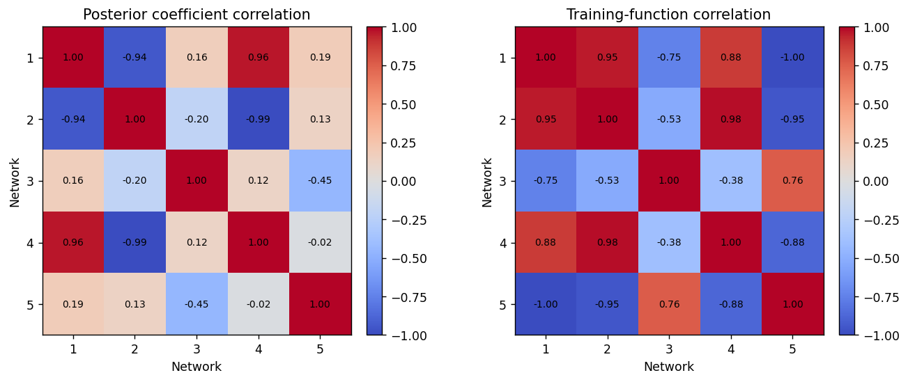
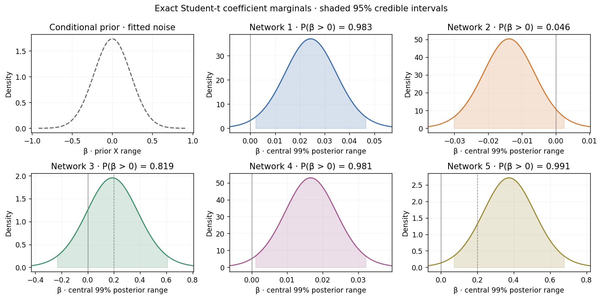
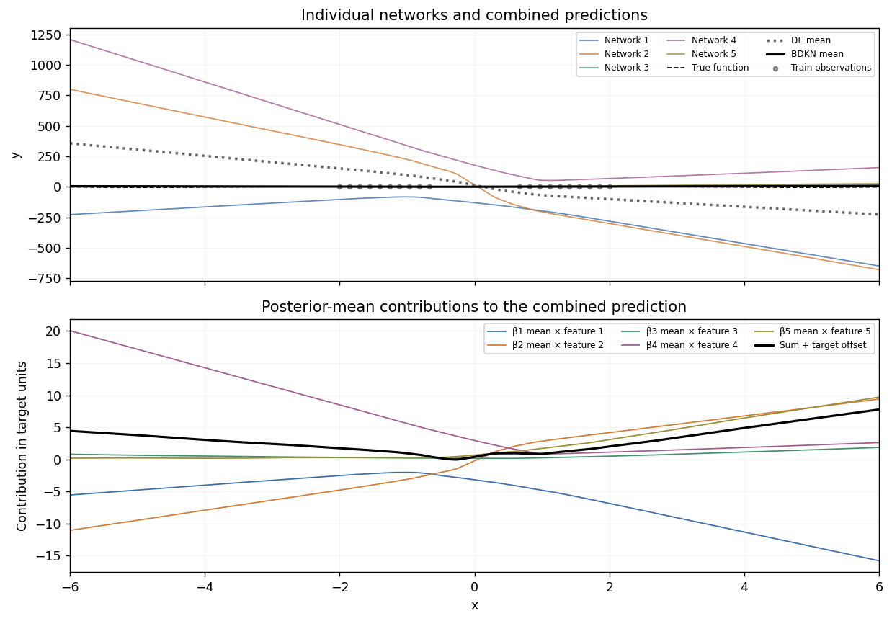
Each density panel uses its own X range for readability; coefficient intervals above share a common axis. Prior reference conditions on fitted noise. Contribution shares use held-out inputs; test targets are used only for scoring.
| Network | β mean | 95% low | 95% high | P(β > 0) | Contribution share | Test RMSE | Test NLL |
|---|---|---|---|---|---|---|---|
| 1 | 0.02433 | 0.00213 | 0.04652 | 0.98335 | 0.29585 | 312.75186 | 11.90702 |
| 2 | -0.01383 | -0.03013 | 0.00247 | 0.04597 | 0.26450 | 461.53743 | 15.01594 |
| 3 | 0.18807 | -0.23206 | 0.60820 | 0.81922 | 0.02997 | 6.32355 | 6.21709 |
| 4 | 0.01661 | 0.00108 | 0.03213 | 0.98137 | 0.28652 | 520.65780 | 12.86960 |
| 5 | 0.37367 | 0.07091 | 0.67643 | 0.99095 | 0.12315 | 12.50327 | 3.40368 |
Weight repulsion · BDKN
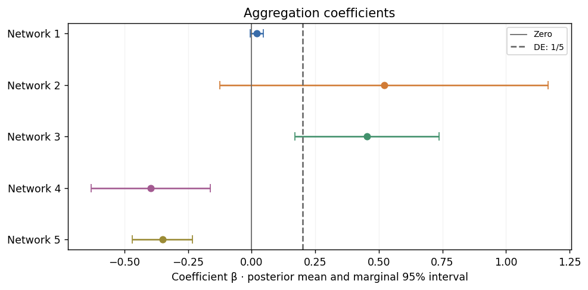
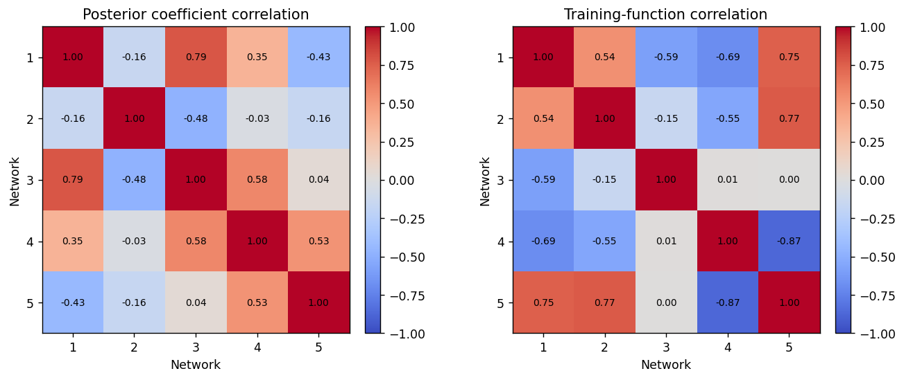
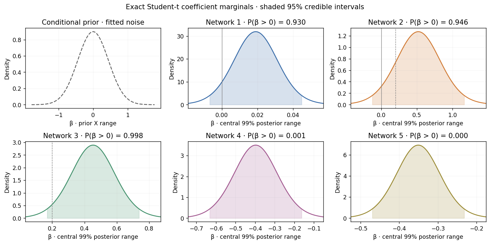
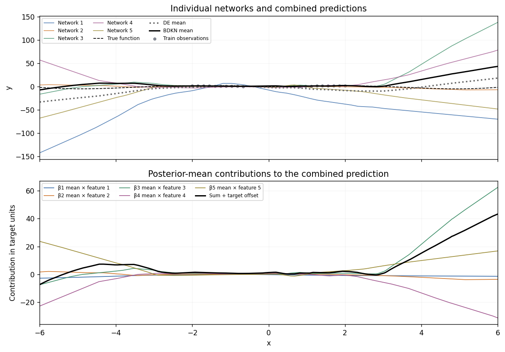
Each density panel uses its own X range for readability; coefficient intervals above share a common axis. Prior reference conditions on fitted noise. Contribution shares use held-out inputs; test targets are used only for scoring.
| Network | β mean | 95% low | 95% high | P(β > 0) | Contribution share | Test RMSE | Test NLL |
|---|---|---|---|---|---|---|---|
| 1 | 0.01900 | -0.00675 | 0.04475 | 0.93031 | 0.03361 | 54.07650 | 444847154.58269 |
| 2 | 0.52056 | -0.12553 | 1.16666 | 0.94581 | 0.04252 | 3.09636 | 2.27841 |
| 3 | 0.45305 | 0.16898 | 0.73711 | 0.99832 | 0.38315 | 43.49310 | 447816432.72274 |
| 4 | -0.39737 | -0.63194 | -0.16279 | 0.00104 | 0.28169 | 30.46975 | 11.70841 |
| 5 | -0.35070 | -0.46961 | -0.23180 | 0.00000 | 0.25904 | 24.14990 | 9.29634 |
First-order repulsion · BDKN
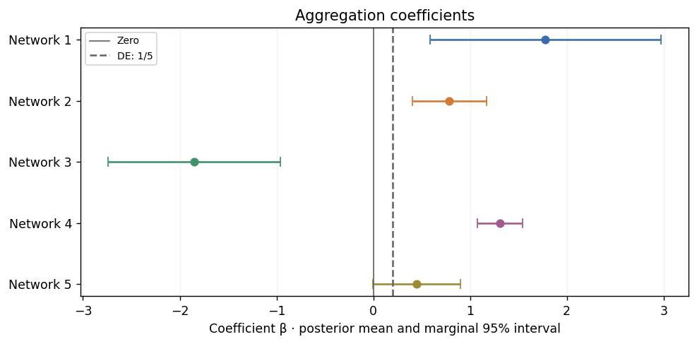
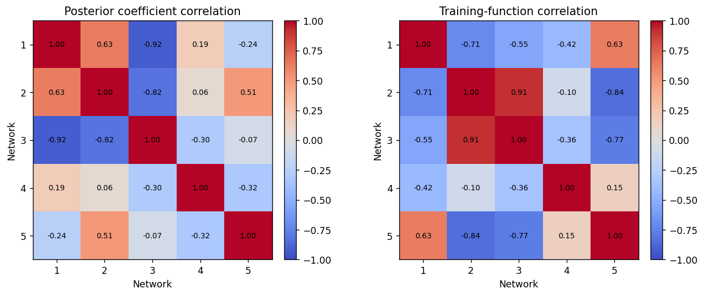
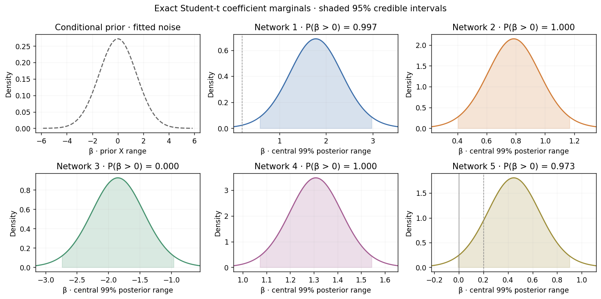
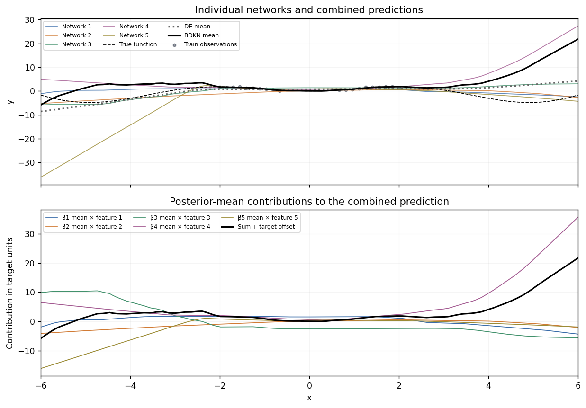
Each density panel uses its own X range for readability; coefficient intervals above share a common axis. Prior reference conditions on fitted noise. Contribution shares use held-out inputs; test targets are used only for scoring.
| Network | β mean | 95% low | 95% high | P(β > 0) | Contribution share | Test RMSE | Test NLL |
|---|---|---|---|---|---|---|---|
| 1 | 1.77911 | 0.58400 | 2.97421 | 0.99721 | 0.09898 | 2.23133 | 12.65921 |
| 2 | 0.78535 | 0.40281 | 1.16788 | 0.99982 | 0.06960 | 2.00424 | 4.27001 |
| 3 | -1.84922 | -2.73764 | -0.96081 | 0.00016 | 0.26264 | 3.14720 | 2.96708 |
| 4 | 1.30805 | 1.07224 | 1.54387 | 1.00000 | 0.40631 | 9.63071 | 455.65781 |
| 5 | 0.44656 | -0.00785 | 0.90098 | 0.97314 | 0.16247 | 9.02331 | 2.73029 |